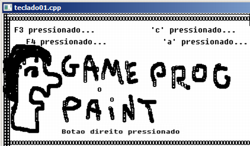

| index | << | >> |
4.1 Visão geral No trabalho com o teclado há dois conceitos importantes: código ascii O código ascii é um código americano padrão para intercâmbio de informações. O conjunto é formado por 256 caracteres aonde apenas os primeiros 128 caracteres formam o padrão de fato. Após os 128 primeiros não há um padrão estabelecido tendo assim variações conforme vários fatores (país, aplicação, sistema, etc.). O código ascii abarca o alfabeto de 26 letras, números e sinais gráficos. A função dbInKey() faz a leitura do teclado e retorna a tecla digitada tendo como limite os caracteres da tabela ascii. Código scan ou scancode O scancode está ligado ao sinal elétrico gerado pelo teclado, sinal este que o sistema ou a aplicação tem a liberdade de processar como quiser. O scancode abarca todas as teclas do teclado e geralmente você vai utilizá-lo para acessar as teclas especiais como as F2 ou F3 que não produzem uma saída gráfica. O acesso ao scancode é dado pela função dbScancode() que faz a leitura do teclado e retorna um número inteiro peculiar a cada tecla digitada. Em nossa aplicação de exemplo ilustramos como você pode utilizar o mouse e o teclado para permitir ao usuário o controle de sua aplicação. Fizemos um pequeno programa de desenho aonde você pode usar o mouse e as teclas de direção. Teste os caracteres 'a' e 'c' e depois F2, F3, e os botões do mouse. // teclado01.cpp // Esse programa ilustra o tratamento do teclado #include "DarkGDK.h" void initsys(); void tst_teclado01(); // Cores int nPreto = 0; int nAzul = 0x0000FF; int nBranco = 0xFFFFFF; // Coordenadas básicas de posicionamento (xpos, ypos) para desenho int xpos = 160; int ypos = 120; void DarkGDK ( void ) { // Começo da aplicação DarkGdk initsys(); while ( LoopGDK ( ) ) { tst_teclado01(); dbSync ( ); } // fim do while return; } // fim da função: DarkGDK void initsys() { // Esta função inicializa o sistema dbSyncOn( ); dbSyncRate (60); // Estabelecendo a configuração de vídeo dbSetWindowOn(); dbSetDisplayMode(640,480,32); dbCLS(nBranco); dbInk(nPreto, nBranco); // Configurando a janela dbSetWindowTitle("teclado01.cpp"); dbSetWindowSize (640,480); dbSetWindowPosition (320,20); } // fim da função: initsys() void tst_teclado01 () { // Esta função ilustra uso do teclado // Usando teclas especiais const int tecla_F3 = 61; const int tecla_F4 = 62; int nscancode = 0; nscancode = dbScanCode(); if (nscancode == tecla_F3) dbText (20,20, "F3 pressionado..."); if (nscancode == tecla_F4) dbText (40,40, "F4 pressionado..."); // Usando teclas normais do teclado char *stecla = dbInKey(); if (!strcmp(stecla,"c")) dbText (250,20, "'c' pressionado..."); if (!strcmp(stecla,"a")) dbText (270,40, "'a' pressionado..."); // Repare nesta sintaxe... if (dbUpKey()==1) ypos = ypos - 5; // Movimento para cima if (dbDownKey()==1) ypos = ypos + 5; // Movimento par abaixo // Repara nesta sintaxe simplificada if (dbRightKey()) xpos = xpos + 5 ; // Movimento para a direita if (dbLeftKey()) xpos = xpos - 5; // Movimento para a esquerda // Testando o mouse const int btnDireito = 2; const int btnEsquerdo = 1; if (dbMouseClick() == btnDireito) dbText (dbMouseX(), dbMouseY(), "Botao direito pressionado"); // Desenhando com o botão esquerdo do mouse if (dbMouseClick()== btnEsquerdo) { xpos = dbMouseX(); ypos = dbMouseY(); } // fim do if // Desenha efetivamente o 'o' na tela dbText (xpos, ypos, "o"); } // fim tst_janela01()Usando o scancode // Usando teclas especiais const int tecla_F3 = 61; const int tecla_F4 = 62; int nscancode = 0; nscancode = dbScanCode(); if (nscancode == tecla_F3) dbText (20,20, "F3 pressionado..."); if (nscancode == tecla_F4) dbText (40,40, "F4 pressionado..."); O bloco de código acima ilustra como fazer a leitura das teclas especiais e tomar outros caminhos conforme a tecla pressionada. Como questão de estilo ou mesmo 'melhores práticas' colocamos o valor de scancode da tecla F3 e F4 numa constante. Isso melhora a leitura do programa do que utilizar o valor direto. Por exemplo, na leitura da linha if (nscancode == 99) você não consegue identificar rapidamente qual a tecla pressionada e isso retarda a correção ou implementação dos recursos que seu programa oferece até você pesquisar e localizar a que tecla corresponde esse valor de scancode. Usando as teclas normais // Usando teclas normais do teclado char *stecla = dbInKey(); if (!strcmp(stecla,"c")) dbText (250,20, "'c' pressionado..."); if (!strcmp(stecla,"a")) dbText (270,40, "'a' pressionado..."); O bloco de código acima ilustra como fazer a leitura das teclas normais e tomar outros caminhos conforme a tecla pressionada. Repare que você não pode fazer uma comparação natural usando a linha de código if (stecla == "a") porque a linguagem c não permite. Você tem que usar a função strcmp() para comparar a igualdade de duas strings e você ainda tem que inverter com o not(!) o resultado visto que strcmp() retorna zero quando as strings são iguais. Usando funções de leitura do teclado if (dbUpKey()==1) ypos = ypos - 5; // Movimento para cima if (dbDownKey()==1) ypos = ypos + 5; // Movimento par abaixo if (dbRightKey()) xpos = xpos + 5 ; // Movimento para a direita if (dbLeftKey()) xpos = xpos - 5; // Movimento para a esquerda A função dbUpKey() retorna 1 caso a tecla seta-para-cima seja pressionada. Como qualquer número positivo é interpretado como verdadeiro você pode omitir, dentro dos parêntesis do if, a comparação de igualdade ( == 1). Veja abaixo a tabela de funções de leitura do teclado:
| nsts = dbUpKey() int dbUpKey (void) |
Retorna 1 se a tecla seta-cima estiver pressionada |
| nsts = dbDownKey() int dbDownKey (void) |
Retorna 1 se a tecla seta-baixo estiver pressionada |
| nsts = dbLeftKey() int dbLeftKey (void) |
Retorna 1 se a tecla seta-esquerda estiver pressionada |
| nsts = dbRightKey() int dbRightKey (void) |
Retorna 1 se a tecla seta-direita estiver pressionada |
| nsts = dbControlKey() int dbControlKey (void) |
Retorna 1 se a tecla control estiver pressionada |
| nsts = dbShiftKey() int dbShiftKey (void) |
Retorna 1 se a tecla shift estiver pressionada |
| nsts = dbReturnKey() int dbReturnKey (void) |
Retorna 1 se a tecla enter\return estiver pressionada |
| nsts = dbEscapeKey() int dbEscapeKey (void) |
Retorna 1 se a tecla esc estiver pressionada |
| nsts = dbSpaceKey() int dbSpaceKey (void) |
Retorna 1 se a tecla espaço estiver pressionada |
| nscancode = dbScanCode() int dbScanCode (void) |
Retorna o valor do código scancode da tecla pressionada |
| nsts = dbKeyState(nscancode) int dbKeyState (int iScanCode) |
Retorna 1 se a tecla com o scancode especificado estiver pressionada |
| Escape | 1 | barra de espaço | 57 |
| 1 | 2 | Caps Lock | 58 |
| 2 | 3 | F1 | 59 |
| 3 | 4 | F2 | 60 |
| 5 | 6 | F3 | 61 |
| 7 | 8 | F4 | 62 |
| 9 | 10 | F5 | 63 |
| 0 | 11 | F6 | 64 |
| menos (-) | 12 | F7 | 65 |
| igual (=) | 13 | F8 | 66 |
| Backspace <== | 14 | F9 | 67 |
| Tab | 15 | F10 | 68 |
| Q | 16 | Num Lock | 69 |
| W | 17 | Scroll Lock | 70 |
| E | 18 | Numpad 7 | 71 |
| R | 19 | Numpad 8 | 72 |
| T | 20 | Numpad 9 | 73 |
| Y | 21 | Numpad - | 74 |
| U | 22 | Numpad 4 | 75 |
| I | 23 | Numpad 5 | 76 |
| O | 24 | Numpad 6 | 77 |
| P | 25 | Numpad + | 78 |
| Left Bracket ( '(' ) | 26 | Numpad 1 | 79 |
| Right Bracket ( ')' ) | 27 | Numpad 2 | 80 |
| Enter | 28 | Numpad 3 | 81 |
| Left Control | 29 | Numpad 0 | 82 |
| A | 30 | Numpad . | 83 |
| S | 31 | F11 | 87 |
| D | 32 | F12 | 88 |
| F | 33 | Numpad Enter | 156 |
| G | 34 | Control lado direito | 157 |
| H | 35 | Numpad / | 181 |
| J | 36 | Alt - lado diretiro | 184 |
| K | 37 | Home | 199 |
| L | 38 | Seta p/cima | 200 |
| Semicolon (; :) | 39 | Page Up | 201 |
| Apostrophe (') | 40 | seta p/esquerda | 203 |
| Tilde (~) | 41 | seta p/direita | 205 |
| Shift - lado esquerdo | 42 | End | 207 |
| Back Slash \ | 43 | seta p/baixo | 208 |
| Z | 44 | Page Down | 209 |
| X | 45 | Insert | 210 |
| C | 46 | Delete | 211 |
| V | 47 | botão esquerdo do mouse | 256 |
| B | 48 | botão direito do mouse | 257 |
| N | 49 | botão do meio/roda do mouse | 258 |
| M | 50 | botão do mouse #3 | 259 |
| Comma (,) | 51 | botão do mouse #4 | 260 |
| Period (.) | 52 | botão do mouse #5 | 261 |
| Forward Slash (/) | 53 | botão do mouse #6 | 262 |
| Shift - lado direito | 54 | botão do mouse #7 | 263 |
| Numpad * | 55 | roda do mouse pra cima | 264 |
| Left Alt | 56 | roda do mouse pra baixo | 265 |
| index | << | >> |
Produzido por Gameprog: Jair Pereira - Setembro/2013 © gameprog.br@gmail.com http://www.gameprog.com.br http://www.nucleoararat.com.br